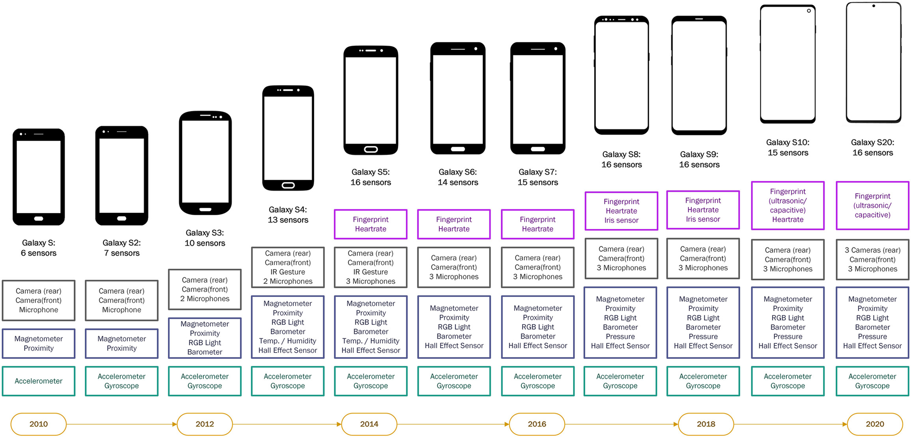
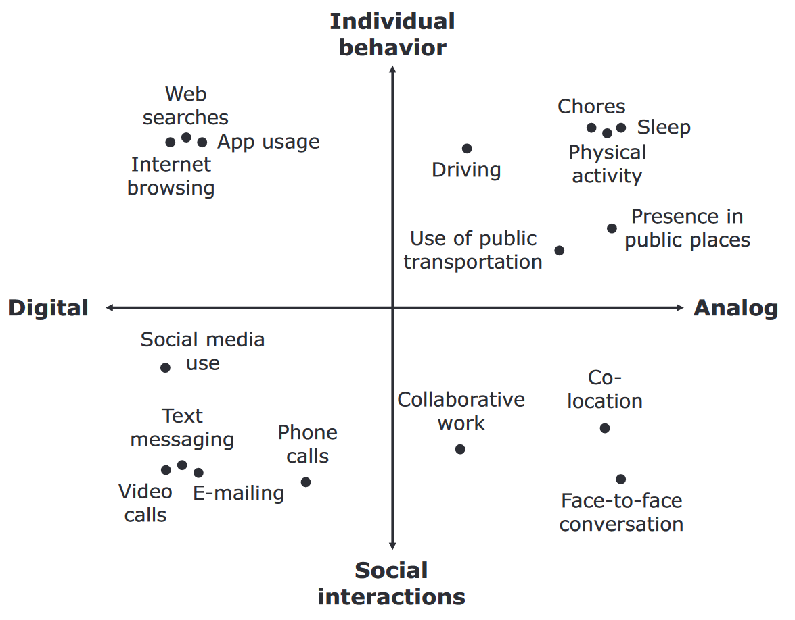
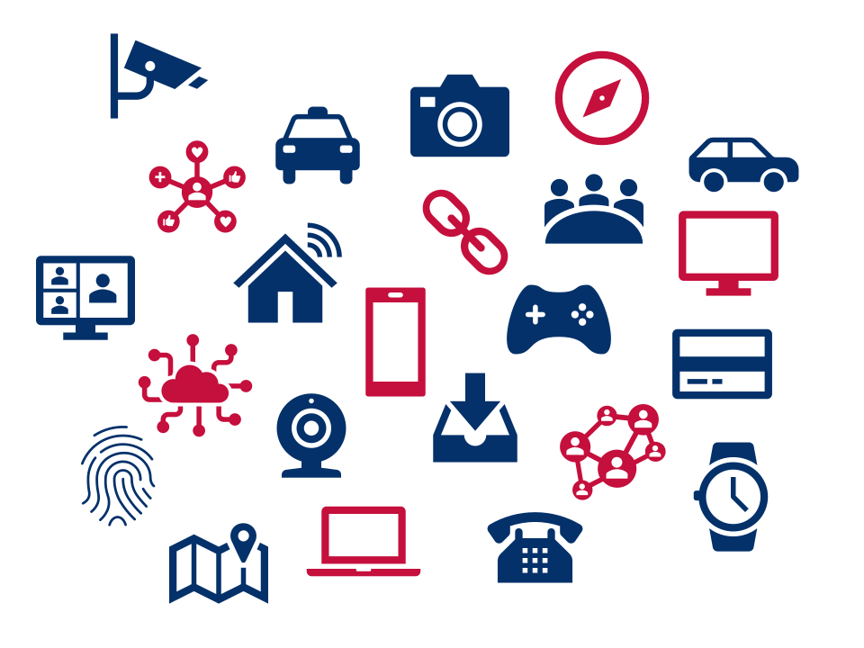
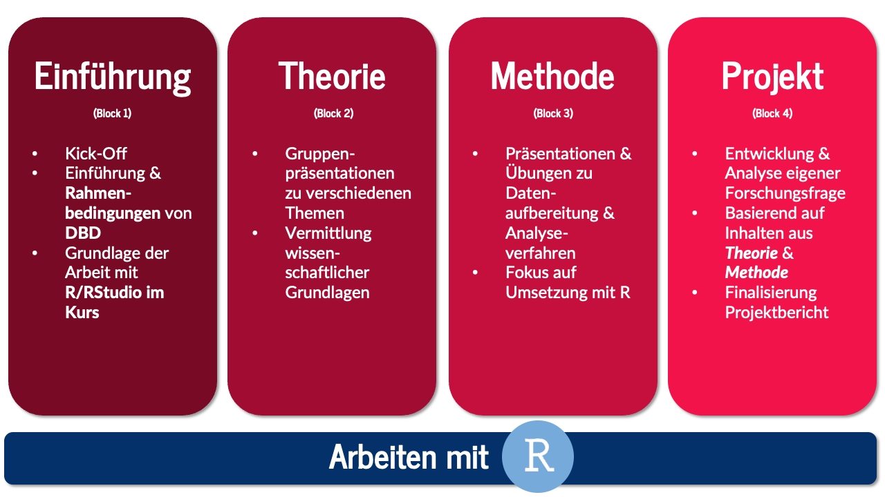
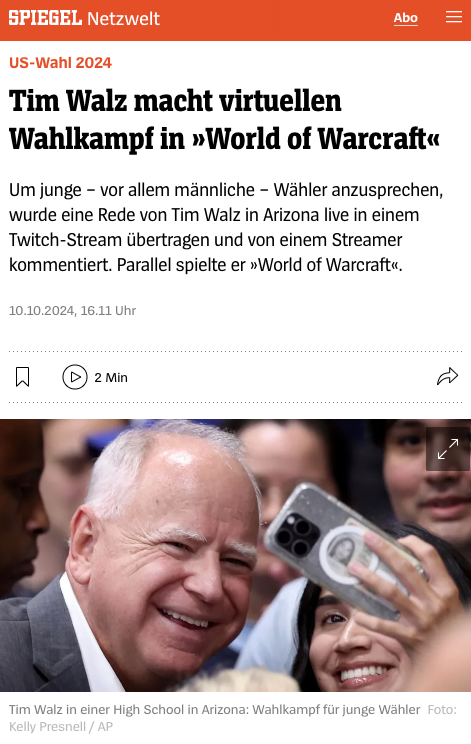

| Session | Datum | Topic | Presenter |
|---|---|---|---|
| 📂 Block 1 | Introduction | ||
| 1 | 23.10.2024 | Kick-Off | Christoph Adrian |
| 2 | 30.10.2024 | DBD: Overview & Introduction | Christoph Adrian |
| 3 | 06.11.2024 | 🔨 Introduction to working with R | Christoph Adrian |
| 📂 Block 2 | Theoretical Background: Twitch & TV Election Debates | ||
| 4 | 13.11.2024 | 📚 Twitch-Nutzung im Fokus | Student groups (TBD) |
| 5 | 20.11.2024 | 📚 (Wirkungs-)Effekte von Twitch & TV-Debatten | Student groups (TBD) |
| 6 | 27.11.2024 | 📚 Politische Debatten & Social Media | Student groups (TBD) |
| 📂 Block 3 | Method: Natural Language Processing | ||
| 7 | 04.12.2024 | 🔨 Text as data I: Introduction | Christoph Adrian |
| 8 | 11.12.2024 | 🔨 Text as data I: Advanced Methods | Christoph Adrian |
| 9 | 18.12.2024 | 🔨 Advanced Method I: Topic Modeling | Christoph Adrian |
| 08.01.2025 | 🎄Christmas Break (No Lecture) | ||
| 10 | 📂 Block 4 | 🔨 Advanced Method I: Machine Learning | Christoph Adrian |
| 15.01.2025 | Project Work | ||
| 11 | 22.01.2025 | 🔨 Project work | Student groups |
| 12 | 29.01.2025 | 🔨 Project work | Student groups |
| 13 | 05.02.2025 | 📊 Project Presentation I | Student groups (TBD) |
| 14 | 📂 Block 1 | 📊 Project Presentation & 🏁 Evaluation | Studentds (TBD) & Christoph Adrian |
Kick-Off
Session 01
23.10.2024
Agenda
print("Hello course!")
Christoph Adrian
- B.A. und M.Sc. Sozialökonomik @ FAU
- Text as Data & Social Media Usage (Effects)
- Fließend in R, Grundkenntnisse in Python, SPSS & Stata
- #gerneperdu
Und nun zu Ihnen!
Vorstellungsrunde
- Wie heißen Sie?
- Was studieren Sie aktuell?
- Was und wo haben Sie im Bachelor studiert?
- Welches soziale Netzwerk/Medium haben Sie letzte Woche am meisten genutzt und warum?
- Beteiligen Sie sich an Online-Diskussionen und wenn ja, wo und warum?
An Abundance of Possibilites
Warum eigentlich Digital Behavioral Data?
Mehr Daten durch fortschreitende Digitalisiserung
Beispiel: Wachsenden Anzahl eingebauter Smartphone-Sensoren
Graphik aus Struminskaya et al. (2020)
Verlagerung in den digitalen Raum
Trend der Digitalisierung von Verhaltensweisen und Aktivitäten

Einschränkungen
- Selektive Nutzung von bestimmten digitalen Geräten bzw. Funktionen
- Kategorisierung ist Momentaufnahme und nicht überschneidungsfrei
Ein Definitionsversuch von DBD
nach Weller (2021)
… fasst eine Vielzahl von möglichen Datenquellen zusammen, die verschiedene Arten von Aktivitäten aufzeichnen
… können dabei helfen, Meinungen, Verhalten und Merkmale der menschlichen Nutzung digitaler Technologien zu erkennen

Lernziele
Die Studierenden werden …
- einen Überblick über die zentralen Möglichkeiten von DBD und die damit verbundenen Herausforderungen bei der Datenerhebung und -aufbereitung bekommen
- lernen die Stärken und Schwächen verschiedener Methoden zur Erhebung von DBD bewerten
- zentrale Anforderungen an Datenschutz, Forschungsethik und Datenqualität kennen und verstehen lernen
- zentrale sozialwissenschaftliche Methoden zur Analyse von DBD kennenlernen
- das Wissen über DBD, Statistik und Datenanalyse in eigenen kleinen Projekten zu üben und anzuwenden
Projektarbeit mit DBD &
Grundidee und Thema des Kurses
4 (Themen-)Blocks
Struktur und Aufbau des Seminars
Twitch meets Politics meets NLP
Auswertung von Live-Stream(-Chats) zur US-Presidential Debates
Entwicklung eigener kleiner Forschungsprojekte mit
- DBD in Form von Live-Chats & Transcripten
- Natrual Language Processing (NLP) für die Analyse von
- Live-(Reactions)-Streams von Twitch-Streamer:innen
- auf die (Vice-)Presidential Debates 2024

Warum Twitch?
Plattform für Live-Streaming von User-generated content
- führende Live-Streaming-Plattform, hauptsächlich für Videospiele, zunehmend aber andere Kategorien (z.B. “Just Chatting”)
- ermöglicht Streamern:innen Echtzeit-Interaktionen mit Community via Chat
- bietet Monetarisierungsmöglichkeiten durch Abonnements, Spenden und Werbung
- in Zahlen: 2023 hat Twitch $3 Milliarden Umsatz generiert, 7,1 Millionen aktive Streamer:innen und 2,41 Millionen aktive Zuschauer:innen im Monat, die ingesamt 21,4 Milliarden Stunden an Content konsumiert haben
Trend: Plattform für politische Diskussionen und Debatten
NLP angewendet auf Chat-Logs und Transkripte
Informationen zur Datenanalyse & potentielle Analysestrategien
- Transkripte & Chats der Live-Streams von hasanabi und zackrawrr und | TheMajorityReport zu der Presidential (Harris vs. Trump) und Vice-Presidential (Vance vs. Walz) Debates 2024
- Download der VODs mit dem
Paket twitch-dl - Download & Stream des Live-Chats mit dem
Paket chat_downloader - Transkription der Streams & der Debatte mit AI-based Transkriptionstool NoScribe
- Download der VODs mit dem
- Auswertung mit NLP-Methoden (z.B. Topic Modeling, Sentimentanalyse etc.)
Kurzer Exkurs zur Auswertung & Analyse
Häufig gestellte Fragen zu notwendigen Methodenvorkenntnissen
Welchen Vorkenntnisse sind für den Kurs vorausgesetzt? Interesse an sozialwissenschaftlichen Perspektiven auf Medien, Kommunikation und digitale Technologien & Grundkenntnisse in der Arbeit mit Statistikprogrammen (z.B. R, Python, Stata, SPSS)
Werden wir praktisch mit Statistikprogrammen arbeiten? Ja. Dazu werden wir R bzw. RStudio nutzen.
Deswegen: Bitte 💻 mitbringen!
Werden wir die mathematische Grundlagen der vorgestellten Methoden lernen? Ja und Nein. Der Kurs konzentriert sich in erster Linie auf die Anwendung; einige mathematische Parameter der vorgestellten Methoden werden jedoch für die Anwendung benötigt und deswegen kurz erörtert.
Any questions so far?
Fragen zum Kurs oder den Inhalten
Organisatorisches
Ablauf, Kommunikation, Prüfungsleistungen
(Vorläufiger) Seminarplan
StudOn & Github
Materialien und Kommunikation im Kurs
- Informationen zu Kurs (Semesterplan, Syllabus, Prüfungleistungen etc.) & den einzelnen Sitzungen (Slides, Literatur und ggf. Übungsmaterial) finden sich auf der Github-Kursseite
- Pflichtliteratur der Präsentationen & Beispieldatensätze werden auf StudOn bereitgestellt
- Für die Kommunikation gilt
- Ankündigungen werden über den StudOn-Verteiler versendet
- für Fragen, allgemein zum Kurs oder spezifische zu R nutzten Sie bitte das Forum
- Kontakt über E-Mail bitte nur bei persönlichen Anliegen, die nicht für die Gruppe relvevant sind.
What is expected
Leistungsanforderungen & Prüfungsleistungen
- Regelmäßig aktive Teilnahme an Sitzungen
- max. zwei unentschuldigte Fehltermine (Kulanzregelung), bei Krankheit zählen die Fehltermine mit
- Bearbeitung von vier Assignments im Rahmen eines Portfolios:
Die “Grundlagenpräsentation”
Informationen zur Gruppenpräsentation zu wissenschaftlichen Grundlagen 📚
- liefert Überblick über das zentrale Thema der Pflichtlektüre, z.B. zentrale Begriffe, Definitionen, Datengrundlage & - aufbereitung sowie methodische Vorgehensweise (inklusive Analyse)
- vermittelt theoretische Grundlage für Forschungsprojekt
- alle bereitgestellten Pflichtexte müssen in der Präsentation berücksichtigt werden, die Gruppe kann aber eigene Schwerpunkte setzen und eigene Quellen hinzufügen
- zwischen 20 und 30 Minuten, danach Zeit für Fragen und Diskussion
Besonderheit: vorher verpflichtendes Feedbackgespräch
Feedback dann, wenn es am meisten hilft
Informationen zum verpflichtenden Feedbackgespräch
- Studierende erhalten Feedback und Tipps, wie sie ihre Präsentation überarbeiten bzw. optimieren können
- 30-minütiges Gespräch in der Sprechstunde (mittwochs, 15:30 bis 16:30 Uhr), eine Woche vor der Präsentation
- Buchung des Termins über StudOn
- Abgabe des ersten vollständigen Präsentationsentwurfs als PowerPoint- oder PDF-Datei spätestens bis 12:00 Uhr am Vortag des Feedback-Gesprächs
Die “Projektpräsentation”
Informationen zur Gruppenpräsentation zum Forschungsprojekt 📊
- Präsentation des (aktuellen Stand des) Projekts, inklusive Vorstellung des theoretischen Hintergrundes, Forschungsfrage Datenaufbereitung, Analyse und ersten Ergebnisse
- zwischen 15 bis 20 Minuten (inklusive mind. 5 Minuten für Nachfragen), maximal 10 Folien
- bietet Möglichkeit für Problembesprechung, Feedback und Diskussion
- zur Vereinfachung der Koordination werden Google Slides Vorlagen zur Verfügung gestellt
Besonderheit: Grundlage für das Peer Review
Feedback geben (lernen)
Informationen zum Peer Review der Gruppenpräsentationen
Peer-Review-Formularen (Ratingskalen sowie offenen Fragen) für Präsentationen anderer Gruppen ausfüllen
lernen, andere Projekte zu bewerten und konstruktives Feedback zu geben
Gruppen erhalten zusätzliches Feedback zum eigenen Projekt, dass für die Präsentation bzw. den Projektbericht verwendet werden kann
Besonderheit: Individuelles Assigment!
Zusammenführung aller Assignments
Informationen zum Projektberichtch
- Projektbericht ist die schriftliche Ausarbeitung des Forschungsprojekts und führt damit die Arbeit aus den Präsentationen und dem (Feedback der) Peer Reviews zusammen
- mindestens eine der vorgestellten Methoden auf ein selbstgewählte Stichprobe der bereitgestellten Daten anwenden, um ein Thema Ihrer Wahl zu erforschen.
- 750 bis 1000 Wörter pro Personn, bei einem Gruppenbericht skaliert die Anzal der Wörter mit einem Faktor von 0,8 pro Person (z.B. sollte eine Zweiergruppe 1200 bis 1600 Wörter schreiben, eine Dreiergruppe 1800 bis 2400 Wörter)
- Abgabe als Quarto-Dokument (& PDF), d.h. der Bericht sowie alle Komponenten (z.B. Tabellen, Grafiken) werden in RStudio erstellt und müssen komplett reproduzierbar sein
Short summary
Fahrplan für die Prüfungsleistungen
| Zeitpunkte | Leistung |
|---|---|
| Block II (13./20./27.11) | “Themenpräsentation” 📚 |
| bis zum 4.12. | R-Tutorials abschließen (Grundlage für Methodenblock) |
| bis zum 15.01. | Erster vollständiger Entwurf “Projektpräsentation” 📊 |
| vom 16.01. bis zum 21.01. | Ausfüllen der Peer-Review-Formulare |
| vom 22.01 bis 29.01/05.02 | Einarbeitung des Feedback in “Projektpräsentation” 📊 |
| 29.01./05.02 | “Projektpräsentation” 📊 |
| bis zum 02.03.25 | Abgabe des Projektberichts |
Warum
Der Einsatz von R bzw. RStudio im Kurs
- Kostenlose Software mit vielen nützlichen und beginner-friendly Tutorials
or ? Both!
Im Kurs:
- Bestehende R-Kenntnisse sind förderlich, aber nicht zwigend notwendig, wichtiger sind praktische Erfahrung im syntaxbasierten Arbeiten
- Learn to code by example: Code von Sitzungen & Beispielen wird bereitgestellt (ggf. durch Showcases)
- Pflicht: Tutorials auf Kurshomepage
Building a common knowledge base
Informationen zu den
- Vermittlung des notwendigen Basiswissens für die Arbeit mit R, RStudio und Quarto mit Hilfe von zwei (Video-)Tutorials:
- Einführung in R, RStudio und Quarto von Andy Field für die Vermittlung der Grundlagen & den allgemeinen Umgang mit den Programmen
- Praktisches Arbeiten mit R des CCS Amsterdam legt Schwerpunkt auf das „inhaltliche“ Arbeiten mit R (Vorstellung von Verwendung von wichtigen Funktionen)
- Weitere nützliche Quellen finden Sie in dem Bereich Working with R auf der Kursseite
Any questions so far?
Gibt es Fragen zu den Prüfungsleistungen oder dem Ablauf?
Themenverteilung
Sonderanmeldetermin für Prüfung
Wichtige Informationen zur Prüfungsanmeldung
- Ärgerlicherweise gibt es immer wieder Studierende, die sich anmelden und betreuen lassen, aber dann einfach irgendwann (teilweise sehr kurzfristig) “verschwinden”.
- Deshalb: Nutzung des WiSo-Sonderanmeldetermin für Prüfung am 28./29.10.
Bitte berücksichtigen Sie unbedingt:
- ⚠️ Nehmen Sie bitte kein Thema an, wenn absehbar ist, dass Sie nicht teilnehmen werden.
- ⚠️ Wir behalten uns vor, bei Rückzug trotz abgeschlossener Themenvergabe, Sie trotzdem für die Prüfung zu melden
Please state your preference
Vergabe der Präsentationsthemen mit SimpleAssign
Bitte scannen Sie den QR-Code oder nutzen Sie folgenden Link und geben Sie Ihre Themenpräferenz an:
02:00
Any (further) questions?
Before we meet again
Hinweise und offene Fragen
- Lernen Sie die Kursseite kennen! Und checken Sie die Infos () zur nächten Sitzung.
- Verschaffen Sie sich einen Überblick über die R-Tutorials
Ein paar Fragen an Sie:
- Why no English? 🤷
- Warum das große Interesse an Zeitreihenanalyse?
- Welche Erwartung an “Machine Learning”?
Bis zur nächsten Sitzung!
Literatur
Engel, U., Quan-Haase, A., Liu, S. X., & Lyberg, L. (2021). Digital trace data (1st ed., pp. 100–118). Routledge. https://www.taylorfrancis.com/books/9781003024583/chapters/10.4324/9781003024583-8
Struminskaya, B., Lugtig, P., Keusch, F., & Höhne, J. K. (2020). Augmenting Surveys With Data From Sensors and Apps: Opportunities and Challenges. Social Science Computer Review, 089443932097995. https://doi.org/10.1177/0894439320979951
Weller, K. (2021). A short introduction to computational social science and digital behavioral data. https://www.gesis.org/fileadmin/user_upload/MeettheExperts/GESIS_Meettheexperts_Introductioncss.pdf